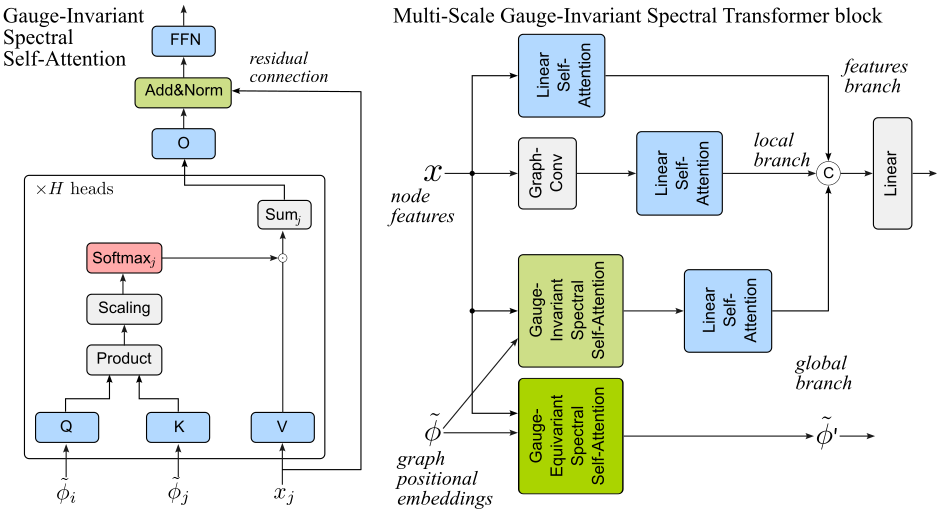
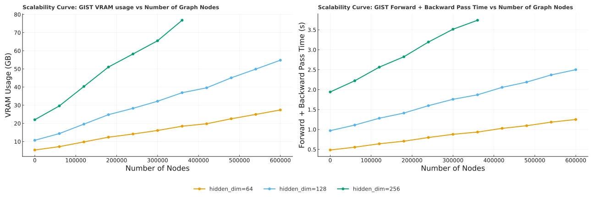
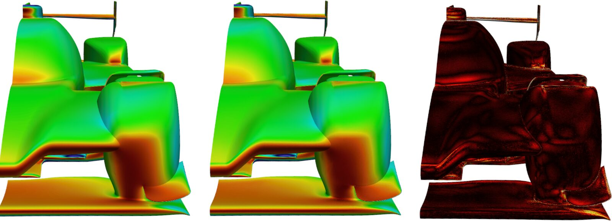
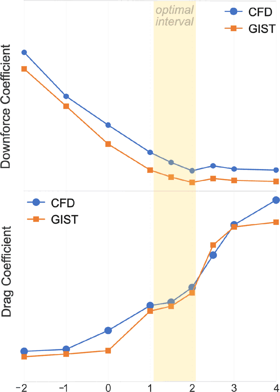

GIST: Gauge-Invariant Spectral Transformers for Scalable Graph Neural Operators
IBM Research
NeurIPS 2026
Abstract
Neural operators on irregular meshes face a fundamental tension. Spectral positional encodings, a natural choice in graph learning for capturing geometry, require cubic-complexity eigendecomposition and inadvertently break gauge invariance through numerical solver artifacts; existing efficient approximations typically sacrifice gauge symmetry by design. Both failure modes break discretization invariance: models fail to transfer across mesh resolutions of the same domain, and similarly across different graphs of related structure in inductive settings. We propose GIST (Gauge-Invariant Spectral Transformer), a scalable neural operator that resolves this tension by restricting attention to pairwise inner products of efficient approximate spectral embeddings. We prove these inner products estimate an exactly gauge-invariant graph kernel at end-to-end O(N) complexity, and establish a formal connection between gauge invariance and discretization-invariant learning with bounded mismatch error. To our knowledge, GIST is the first scalable graph neural operator with a provable discretization-mismatch bound. Empirically, GIST sets state-of-the-art on the AirfRANS, ShapeNet-Car, DrivAerNet, and DrivAerNet++ mesh benchmarks (up to 750K nodes), and additionally matches strong baselines on standard graph benchmarks (e.g., 99.53% micro-F1 on PPI).
Results
Surface-pressure prediction on unseen geometries, lower is better. GIST: mean ± standard deviation over 3 seeds on AirfRANS and ShapeNet-Car.
| Model | AirfRANS (MSE) | ShapeNet-Car (rel. ℓ2) |
|---|---|---|
| Transolver | 0.0142 | 7.45% |
| GIST | 0.0017 ± 0.0002 | 7.02% ± 0.05 |
| Model | DrivAerNet (MSE) | DrivAerNet (rel. ℓ2) | DrivAerNet++ (MSE) | DrivAerNet++ (rel. ℓ2) |
|---|---|---|---|---|
| RegDGCNN | 0.0901 | 28.49% | 0.0829 | 27.72% |
| Transolver | 0.0537 | 22.52% | 0.0715 | 23.87% |
| FigConvNet | 0.0438 | 20.98% | 0.0499 | 20.86% |
| TripNet | 0.0423 | 20.35% | 0.0455 | 20.05% |
| GIST | 0.0400 | 20.03% | 0.0363 | 18.60% |
Node classification (accuracy, micro-F1 on PPI; higher is better), against the best of the baselines in the paper for each benchmark. GIST: mean ± standard deviation over 6 seeds.
| Model | Cora | CiteSeer | PubMed | Photo | ogbn-arxiv | PPI |
|---|---|---|---|---|---|---|
| Best baseline | 85.50 | 73.40 | 81.12 | 95.48 | 72.63 | 99.53 |
| (method) | GCNII | GCNII | GCN | SpecFormer | SGFormer | GCNII |
| GIST | 84.25 ± 0.65 | 73.85 ± 0.63 | 82.60 ± 0.37 | 95.65 ± 0.46 | 72.31 ± 0.29 | 99.53 ± 0.01 |
Bold marks the best mean. Baseline numbers, their sources and all other baselines are in the paper.
Architecture

Scalability

In industry
With Dallara, the Italian race-car maker, we trained GIST on high-fidelity CFD simulations of an LMP2-class race car, validated by Dallara's aerodynamicists. Its thin wings, splitters and diffusers are much harder to predict than the smooth passenger cars of public benchmarks.

- Surface-pressure error (MSE) of 1.88 × 10−2, about half that of the next best model (GAOT, 3.55 × 10−2).
- Drag and downforce within 0.6% and 0.7% of CFD on average.
- In a sweep of the rear-diffuser angle, GIST answers in about 10 seconds where CFD takes several hours, and picks the same best angle (1–2°).

Details in the Faster by Design paper (AI & PDE workshop, ICLR 2026; figures from it under CC BY-SA 4.0) and the IBM Research blog.
Code
The repository holds the model and one config per benchmark, with the commands, data and compute needed to reproduce each result.
Needs uv; pip works too, see the README.
curl -LsSf https://astral.sh/uv/install.sh | sh # installs uv, if missing
git clone https://github.com/IBM/gist-neurips-2026.git
cd gist-neurips-2026
uv run python scripts/generate_embeddings.py cora --embed_dim 512 --deg 128
uv run python -m gist.train configs/cora.yamlCitation
@inproceedings{rigotti2026gist,
title = {{GIST}: Gauge-Invariant Spectral Transformers for Scalable Graph Neural Operators},
author = {Rigotti, Mattia and Thumiger, Nicholas and Frick, Thomas},
booktitle = {Advances in Neural Information Processing Systems},
volume = {39},
year = {2026}
}